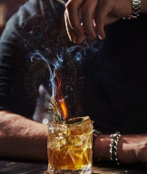

Para criar drinks, é preciso ter alguns equipamentos básicos, como um coqueteleira, um dosador, um mixer, um coador e um copo medidor. Além disso, é importante ter uma variedade de bebidas, como destilados, licores, vinhos, espumantes, sucos, xaropes e água tônica. Com esses ingredientes, é possível combinar diferentes sabores, cores e texturas, criando drinks que agradam aos olhos e ao paladar.

livros sobre o assunto
Os melhores livros sobre a arte da criação de drinks